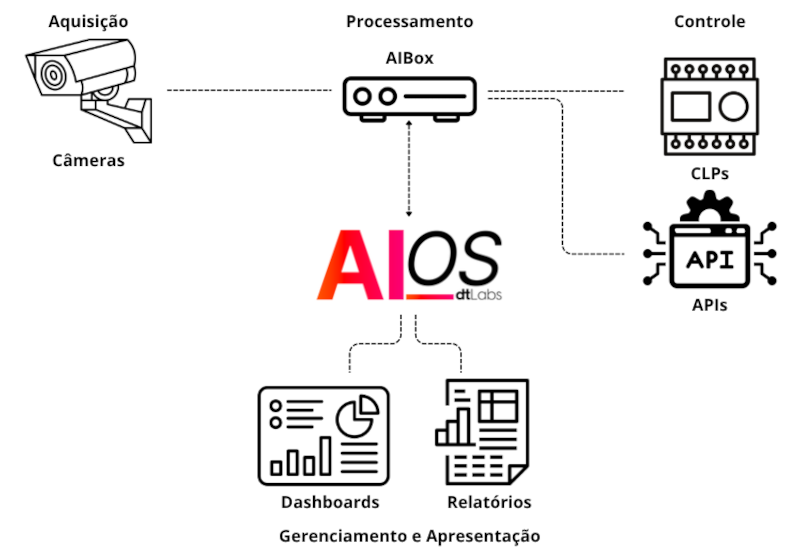

AIOS Platform Organization and Features
1. On this page
Basic Structure of the AIOS Platform
The basic structure of AIOS can be divided into four modules, as illustrated by the figure below: 
| Module | Function |
|---|---|
| Acquisition | Data capture, using cameras (IP or analog connected via DVR) to obtain information about the location or situation to be monitored. |
| Processing | Local execution of AI algorithms and sending results to the platform. |
| Control | Control of peripherals (via PLCs, Programmable Logic Controllers) and other systems (via APIs), based on the detection results produced by the algorithms. |
| Management and Presentation | Creation and management of pipelines and devices, analysis of metadata generated by AIBox, production of dashboards and reports for presenting results. |
Key Features of the AIOS Platform
- No-code interface: allows the creation of AI solutions without the need for programming.
- Dozens of ready-to-use components: including people and object detection, event counting, ALPR, communication with external devices via PLCs or GPIO, notification on various platforms, and many more.
- Utilizes existing IP cameras: transforms your existing cameras into versatile smart cameras at a fraction of the cost of dedicated hardware.
- Local execution (on the AIBox) of algorithms: ensures low latency in event detection.
- Increased privacy and lower bandwidth consumption: only the metadata resulting from processing is sent to the platform, reducing the risk of exposure of sensitive data (images captured by your cameras) and bandwidth consumption compared to solutions that perform processing in the cloud.
- Customizable dashboards: organize pages, components, counters, and graphs according to your needs. Dashboards can be shared on the internet, with public visibility or password-controlled access.
- API for integration: integrate AIOS with existing solutions and tools, or develop custom solutions that require advanced processing.
- Training module (Dojo): allows the development and training of customized AI models, perfectly adapted to your needs.
- Device fleet management: see which devices are part of your fleet, which pipelines are available or running, system resource usage, and more.
- Platform developed in Brazil: suitable for the needs of the national market and with technical support in Portuguese.